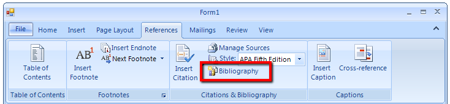

Bibliographic References
Bibliographic references represent links (in the form of text) to documents, books, films and everything that can be cited in a Word document.
You can manage those in RadRichTextEditor by going to References -> Citations & Bibliography. It looks like this:

This article covers:
Add Bibliographic Reference
The two main parts of Bibliographic References are:Source
This is what describes the source you want to refer. We named the class representing a source BibliographicSource.
It has a number of properties:
Type of Source – there is a predefined list of available types (Book, Book Section, Journal Article, Conference Proceeding, etc.).
You have to choose the type of your source (for example if you quote a line from a movie you can choose type "Film", etc).TagName – this is the unique identifier of the Source. Every source has to have a unique TagName. You will be prompted if you try to
enter a duplicate.All other fields – there are a number of Fields that an object of type BibliographicSource possesses like Author,
Title, Year, City, etc. Those properties are a lot and we won’t enumerate them all now, but you have to know that every type of source include
s some subset of those properties. When you open the AddNewBibliographicSourceDialog, upon changing the type only the
necessary properties will be shown. The dialog looks like this:
 Style
Style
This is how the source is represented when inserted in the document. There are a number of predefined styles in Word. We support 3 for now –
APA Fifth Edition, Harvard – Anglia 2008 and ISO 690 – First Element and Date. The name of the class we use to describe a style is called
BibliographicReferenceStyleBase. Every style should derive from this abstract class and implement the methods needed
to function properly. Those methods are:
Properties __Key__ and __Name__ – the key is used to uniquely identify the style in the document and the Name is what is displayed in the drop down.Get{Type}Citation() method - there is such method for every SourceType. It returns string and
describes how the citation looks like according to this Style.Get{Type}BibliographyRecord() – there is such method for every SourceType. It returns object of
type Telerik.Windows.Documents.Model.Paragraph and describes how the entry should look like in the Bibliography.
User Interface
You already saw how the AddNewBibliographicSourceDialog looks like. It is used to insert a new Source. After you have inserted
all the sources you need, you can manage them through the ManageBibliographicSourcesDialog. It looks like so:

As you can see you can edit an existing source, delete an existing source or create a new one.
You can insert a bibliography on the caret position using the following button:
When you click on the "Insert Citation" drop down button you will get a list with all the available sources. Clicking on one will insert a Citation in
the document. At the bottom there is another button that allows you to create new BibliographicSource object
(it shows the AddNewBibliographicSource dialog):

Using Bibliographic References API
Everything that we can do using UI, we can do in code behind too. All sources reside in RadDocument.BibliographicSources
collection. It is of type ObservableCollection
is to create an object of the proper type and add it to the collection. The UI will be updated accordingly. This is true for updating and removing
sources as well.
This is how you can add a new source:
__[C#] __
BibliographicSource bibliographicSource = new BibliographicSource("test");
bibliographicSource.Author = "authorTest";
bibliographicSource.Title = "titleTest";
bibliographicSource.Editor = "editorTest";
bibliographicSource.SourceType = BibliographicSourceType.Book;
this.radRichTextEditor1.Document.BibliographicSources.Add(bibliographicSource);
__[VB.NET] __
Dim bibliographicSource As New BibliographicSource("test")
bibliographicSource.Author = "authorTest"
bibliographicSource.Title = "titleTest"
bibliographicSource.Editor = "editorTest"
bibliographicSource.SourceType = BibliographicSourceType.Book
Me.radRichTextEditor1.Document.BibliographicSources.Add(bibliographicSource)
'#End Region
'#Region "add"
Dim APAFifthEdition As New APAFifthEditionStyle()
Me.radRichTextEditor1.Document.BibliographicStyles.Add(APAFifthEdition.Key, APAFifthEdition)
Dim HarvardAnglia2008 As New HarvardAnglia2008Style()
Me.radRichTextEditor1.Document.BibliographicStyles.Add(HarvardAnglia2008.Key, HarvardAnglia2008)
Dim ISO690_FirstElementAndDate As New ISO690_FirstElementAndDateStyle()
Me.radRichTextEditor1.Document.BibliographicStyles.Add(ISO690_FirstElementAndDate.Key, ISO690_FirstElementAndDate)
'#End Region
'#Region "citation"
Dim citationField As New CitationField()
citationField.SourceName = "test"
Me.radRichTextEditor1.Document.InsertField(citationField, FieldDisplayMode.Result)
'#End Region
'#Region "bibliography"
Dim bibliographyField As New BibliographyField()
Me.radRichTextEditor1.Document.InsertField(bibliographyField, FieldDisplayMode.Result)
'#End Region
'#Region "style"
Me.radRichTextEditor1.ChangeBibliographicStyle(New HarvardAnglia2008Style())
'#End Region
End Sub
End Class
To create a custom BibliographicStyle you have to derive from BibliographicReferenceStyleBase and
add the style to the document so it can be usable. All styles are kept in a dictionary that matches a string to a
BibliographicReferenceStyleBase object. Usually the string is the key of the particular style. Adding style is as easy as:
__[C#] __
APAFifthEditionStyle APAFifthEdition = new APAFifthEditionStyle();
this.radRichTextEditor1.Document.BibliographicStyles.Add(APAFifthEdition.Key, APAFifthEdition);
HarvardAnglia2008Style HarvardAnglia2008 = new HarvardAnglia2008Style();
this.radRichTextEditor1.Document.BibliographicStyles.Add(HarvardAnglia2008.Key, HarvardAnglia2008);
ISO690_FirstElementAndDateStyle ISO690_FirstElementAndDate =
new ISO690_FirstElementAndDateStyle();
this.radRichTextEditor1.Document.BibliographicStyles.Add(ISO690_FirstElementAndDate.Key,
ISO690_FirstElementAndDate);
__[VB.NET] __
Dim APAFifthEdition As New APAFifthEditionStyle()
Me.radRichTextEditor1.Document.BibliographicStyles.Add(APAFifthEdition.Key, APAFifthEdition)
Dim HarvardAnglia2008 As New HarvardAnglia2008Style()
Me.radRichTextEditor1.Document.BibliographicStyles.Add(HarvardAnglia2008.Key, HarvardAnglia2008)
Dim ISO690_FirstElementAndDate As New ISO690_FirstElementAndDateStyle()
Me.radRichTextEditor1.Document.BibliographicStyles.Add(ISO690_FirstElementAndDate.Key, ISO690_FirstElementAndDate)
'#End Region
'#Region "citation"
Dim citationField As New CitationField()
citationField.SourceName = "test"
Me.radRichTextEditor1.Document.InsertField(citationField, FieldDisplayMode.Result)
'#End Region
'#Region "bibliography"
Dim bibliographyField As New BibliographyField()
Me.radRichTextEditor1.Document.InsertField(bibliographyField, FieldDisplayMode.Result)
'#End Region
'#Region "style"
Me.radRichTextEditor1.ChangeBibliographicStyle(New HarvardAnglia2008Style())
'#End Region
End Sub
End Class
Insert Citation Field using code behind
The Citation field is a field not different from every other field. You can use the InsertFIeld() method of
RadDocument to insert a citation:
__[C#] __
CitationField citationField = new CitationField();
citationField.SourceName = "test";
this.radRichTextEditor1.Document.InsertField(citationField, FieldDisplayMode.Result);
__[VB.NET] __
Dim citationField As New CitationField()
citationField.SourceName = "test"
Me.radRichTextEditor1.Document.InsertField(citationField, FieldDisplayMode.Result)
'#End Region
'#Region "bibliography"
Dim bibliographyField As New BibliographyField()
Me.radRichTextEditor1.Document.InsertField(bibliographyField, FieldDisplayMode.Result)
'#End Region
'#Region "style"
Me.radRichTextEditor1.ChangeBibliographicStyle(New HarvardAnglia2008Style())
'#End Region
End Sub
End Class
Insert Bibliography Field using code behind
The Bibliography field is a field not different from every other field. You can use the InsertFIeld() method of
RadDocument to insert a citation:
__[C#] __
BibliographyField bibliographyField = new BibliographyField();
this.radRichTextEditor1.Document.InsertField(bibliographyField, FieldDisplayMode.Result);
__[VB.NET] __
Dim bibliographyField As New BibliographyField()
Me.radRichTextEditor1.Document.InsertField(bibliographyField, FieldDisplayMode.Result)
'#End Region
'#Region "style"
Me.radRichTextEditor1.ChangeBibliographicStyle(New HarvardAnglia2008Style())
'#End Region
End Sub
End Class
Changing Bibliographic Style using code behind
There is a method called ChangeBibliographicStyle() on RadRichTextEditor. It accepts one
argument of type BibliographicReferenceStyleBase. Changing the current style is as simple as:
__[C#] __
this.radRichTextEditor1.ChangeBibliographicStyle(new HarvardAnglia2008Style());
__[VB.NET] __
Me.radRichTextEditor1.ChangeBibliographicStyle(New HarvardAnglia2008Style())
'#End Region
End Sub
End Class